🎧 Prefer to listen? Open the audiobook
Catching Lightning: Direct Energy Conversion
Strip away three hundred years of progress and every power station humanity has ever built is doing the same thing a steam engine did in 1712: making a fire to boil water. Coal, gas, uranium, even a deuterium–tritium plasma hotter than the Sun — all of it ends in the same humble ritual. You burn something to make heat, and the heat boils water, and the steam spins a turbine, and the turbine turns a generator. Energy arrives as motion in a fluid and leaves as electricity, and in between it must pass through a heat engine. It is a magnificent trick, and it is a wasteful one. That passage is where the money leaks out. A heat engine is bound by the Carnot limit, a law of thermodynamics as firm as gravity, which says that no matter how clever your boiler and your blades, you must throw away a large fraction of the heat you started with simply to run the cycle at all. In practice a good thermal plant converts something like a third to a half of its heat into electricity and dumps the rest into a cooling tower or a river. That discarded majority is not a bug an engineer can design away. It is the tax you pay for using heat as the middleman.
The burner does not pay the full tax. That single fact — more than the clean fuel, more than the long straight bottle, more than any of it — is the economic secret of the whole machine. This chapter is about how it dodges the tax: how the burner takes the kinetic energy of its fusion products and turns it into electricity almost directly, skipping most of the steam cycle, and why that shortcut is only available because of the fuel the burner was built to burn. It is called direct energy conversion, DEC for short, and it is the reason the forty-dollar electron is possible at all.
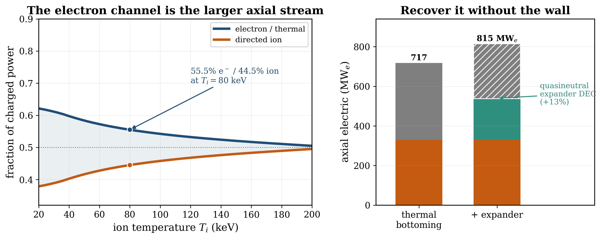
The Carnot tax, and the way around it
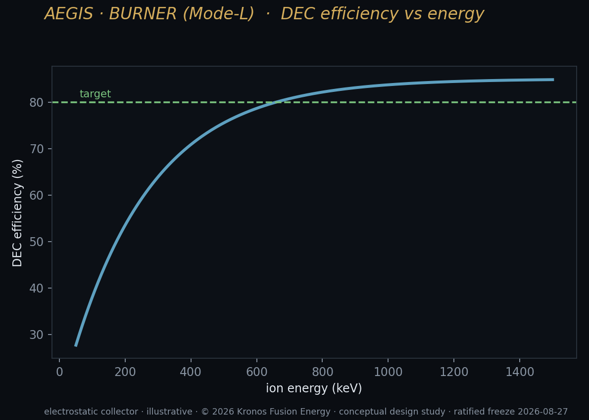
To see the shortcut, look again at what comes out of the machine. In a deuterium–tritium plant — the fusion everyone means when they say "fusion" — roughly four-fifths of the energy leaves the plasma as neutrons. Neutrons carry no charge, so a magnetic field cannot touch them; they fly out in all directions, bury themselves in the surrounding structure, and deposit their energy as heat. From that point on, a D–T fusion plant is a boiler. It has all the exotic physics of a star in its core and, bolted to the outside, the same nineteenth-century steam plumbing as a coal station, paying the same Carnot tax on the way out.
A charged particle is a different opportunity entirely. A charged particle in flight is, in effect, a tiny electric current already — a packet of moving charge carrying kinetic energy. You do not have to let it crash into a wall and surrender its energy as heat. You can decelerate it, gently, against an electric field, and harvest the energy it gives up as it slows. That is the essence of direct conversion, and it is not a heat engine. It is not bound by Carnot at all, because there is no hot reservoir and no cold reservoir and no working fluid in between — only a charged particle climbing an electrostatic hill and paying for the climb in electricity. Where a heat engine is capped near half by thermodynamics, a well-built direct converter can in principle recover most of what the particles carry. The prize is enormous: skip the boiler, skip the turbine hall, skip the cooling tower, and skip the largest single loss in every thermal power plant ever built.
A neutron can only be caught as heat. A charged particle can be caught as electricity. The whole economics of the burner turns on that one sentence.
It helps to be precise about what "the Carnot tax" actually is, because it is not sloppiness or bad engineering that a better boiler could fix — it is a law. Any engine that makes work by moving heat from a hot reservoir to a cold one is capped, at best, at an efficiency of one minus the ratio of the cold temperature to the hot. Push the hot side as high as your materials survive and the cold side as low as your environment allows, and a real thermal plant still lands somewhere between a third and a half; the rest goes up the cooling tower as warm water and warmer air. That discarded majority is the single largest energy loss in every fission plant, every coal plant, and every D–T fusion plant ever contemplated, and no amount of cleverness inside the cycle removes it, because the ceiling is set by the two temperatures, not by the machinery between them. Direct conversion does not beat that ceiling; it sidesteps it, by never turning the energy into heat in the first place. There is no hot reservoir and no cold reservoir to sit between — only a charged particle and a voltage. That is the whole of the trick, and it is why direct conversion is not an incremental improvement on a steam plant but a different category of machine.
Why the fuel has to be clean
Direct conversion is therefore only worth anything if your fusion energy comes out charged. This is the deep reason the burner does not burn deuterium and tritium. It burns deuterium and helium-3, and the difference is the difference between a beam you can catch and a flux you can only absorb.
Everything in this chapter descends from the right-hand side of the primary D–³He reaction — boxed with its full 18.35-MeV energy budget in the burner chapter — which splits its energy into a 14.66-MeV proton and a 3.67-MeV alpha and no neutron at all. Both are charged. Both are held by the machine's magnetic field, guided down its open field lines, and delivered to the converters at the ends as a directed stream. And — the point the fourth general result of this book keeps making — both come out at sharp, discrete energies, because a two-body reaction must, by conservation of momentum, hand its two products fixed shares. That discreteness is not a nicety; it is the property that makes the beam convertible at all. Nothing about the primary reaction is thrown at the walls as radiation. Compare the D–T case, where about eighty percent of the yield is uncatchable neutron energy, and the contrast is stark: one fuel hands you its energy in a form you can convert directly, and the other hands most of it to you as heat you can only boil water with.
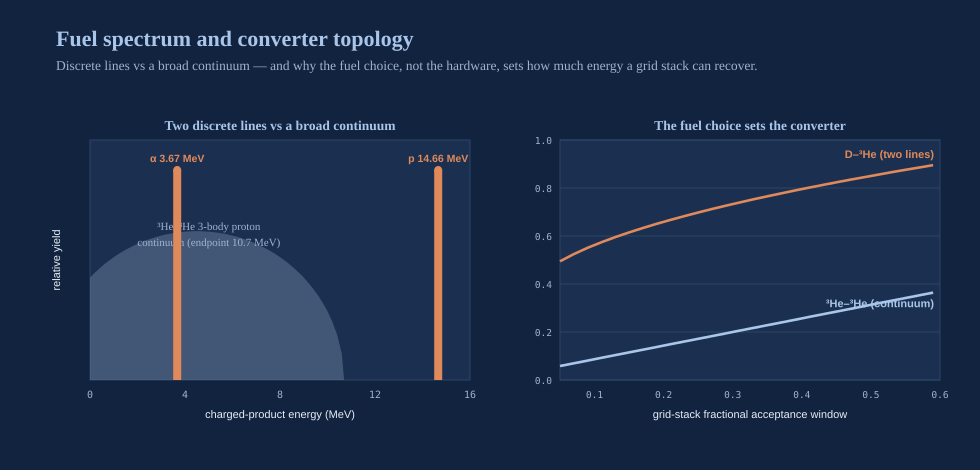
I have said elsewhere in this book, and I will repeat it here because precision is where credibility lives, that D–³He is low-neutron, not zero-neutron. Deuterium ions also fuse with one another, and one of those side reactions makes a neutron; at the burner's design point that unavoidable channel carries about 5.44 percent of the fusion power, against D–T's roughly eighty. That residual is small enough to be a shielding problem rather than a plant-destroying one, and — this is the point for direct conversion — it means the overwhelming majority of the energy leaves as charged particles that DEC can act on. Low neutrons is what keeps the plant alive; charged products are what make the plant cheap. The clean fuel earns its keep twice.
Decelerating particles against a voltage
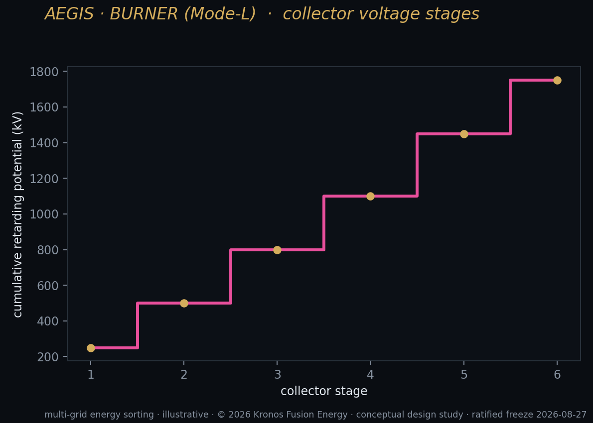
So picture the proton. It has left the burning central cell, threaded the high-field mirror throat, and is now flying out through the open end of the machine along a diverging magnetic field, carrying up to 14.66 MeV of kinetic energy. To convert it, we place in its path a series of collector electrodes held at successively higher positive voltages. The positively charged proton, climbing toward electrodes that repel it, is decelerated — it trades kinetic energy for potential energy, slowing as it rises through the voltage. Tune the electrode voltages to the particle's energy and it arrives at the collector nearly at rest, having given up almost all of its energy to the field. What you draw off the electrodes is direct current. No heat, no steam, no turbine: the proton's speed has become voltage and current more or less on contact.
The real exhaust train has more than one stage, and it is worth walking, because each stage does one job. First the open field lines fan the exhaust out and a cusp-type converter sorts the arriving particles by charge and species — you cannot decelerate protons and helium nuclei on the same electrode ladder if they arrive at different energies. Then the sorted high-energy protons meet the deceleration stage proper — the travelling-wave converter — which slows them against a staged retarding field and draws off their energy as current. Whatever is left, and the thermalized electron stream, falls through to a bottoming cycle. The honesty in the ledger lives in that first stage's efficiency: a single-stage ion tube has actually been measured at about 0.47 to 0.48, while a two-stage arrangement could in principle do better — and we book the measured single-stage value, leaving the two-stage optimum out of the balance rather than banking a number the hardware has not yet reached.
This ion direct converter is not a Kronos invention, and we are scrupulous about saying so. The venetian-blind collector and the travelling-wave direct converter — the two workhorse geometries for decelerating a fast-ion beam against staged electrodes — were developed and tested in the tandem-mirror era a generation ago, and the architecture descends directly from the D–³He direct-conversion program that the company's co-founder, a pioneer of the fuel science, helped build over a career. We adopt that lineage as established practice and cite it as our provenance, not as arm's-length prior art. What we add is discipline about the numbers, and one correction that the field had been getting wrong for fifty years. I will come to the correction shortly.
The fuel choice reaches even into the converter's design. A retarding electrode stack works best on a monoenergetic beam, because a single electrode voltage can be matched to a single particle energy. D–³He obliges: it delivers two clean, discrete lines — the 14.66-MeV proton and the 3.67-MeV alpha — that a staged converter can decelerate efficiently. The fully aneutronic alternative sometimes proposed, helium-3 burning on helium-3, is a three-body reaction — a helium-4 and two protons, releasing 12.86 MeV — and three bodies share that energy along a smooth continuum, its protons smeared all the way up to a kinematic endpoint near 10.7 MeV (five-sixths of the total). No narrow electrode stack can match a continuum; there is no single voltage to tune to. Modelled as a triangular acceptance window, the two-line D–³He spectrum recovers about ten and a half times more energy than that continuum at narrow bandwidth, and still more than twice as much when the window is opened wide. The clean-enough fuel is also the convertible fuel. That is not a coincidence; it is why the burner burns what it burns — and it is the fourth of the general results this book keeps returning to, that multiplicity, not charge, is what sets convertibility.
The spectrum that actually reaches the ends
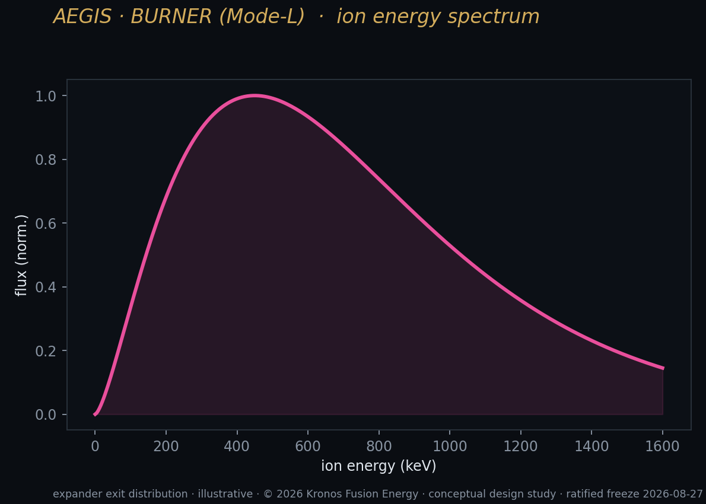
Here is the correction, and it is the newest and most honest result in the burner story, because it began as a mistake the whole field — ourselves included — had been making.
The received wisdom about D–³He runs like this: the 14.66-MeV proton carries about eighty percent of the charged energy, so a good ion converter should recover the great majority of the exhaust at high efficiency, leaving only a small thermal remainder. That reasoning is impeccable, and it is wrong, because it describes the birth spectrum — the energy the particles have at the instant they are created — and quietly assumes that this is also the spectrum that reaches the ends of the machine. It is not. Those are two different objects.
A 14.66-MeV proton born into an 80-keV plasma does not fly straight out. It slows down first, colliding on the way, and where its energy goes as it slows is governed by a single threshold:
the Stix critical energy — above it, a fast ion sheds its energy mainly onto the plasma's ions; below it, mainly onto the electrons.
For the burner's fuel mix at 80 keV that critical energy is about 0.85 MeV — and the proton is born some seventeen times above it. So on the way down, through the great bulk of its slowing, the proton spends its time above the threshold, dumping the large majority of its energy onto the electrons, not the ions. A full-slowing-down accounting sends about seventy-six percent of the charged power into the electron channel. The received wisdom did not get the physics wrong; it simply never carried it past the plasma's edge to the converter.
A mirror does not let its fast ions fully thermalize — some escape axially before they finish slowing, and that escaping remnant stays in the ion channel — so the real split is less lopsided than seventy-six percent, but it does not reverse. Booking the competition between slowing-down and axial escape with a single confinement ratio, calibrated to the burner's operating point, gives a thermalized axial split of about 55.5 percent in the electron/thermal channel and 44.5 percent in the directed-ion channel at 80 keV. The electron channel is the larger axial stream, and it stays the larger stream across the entire 20-to-200-keV range a reactor might plausibly run at. This is not an artifact of one transport model or one tuning; it follows from textbook slowing-down theory and is robust across confinement regimes.
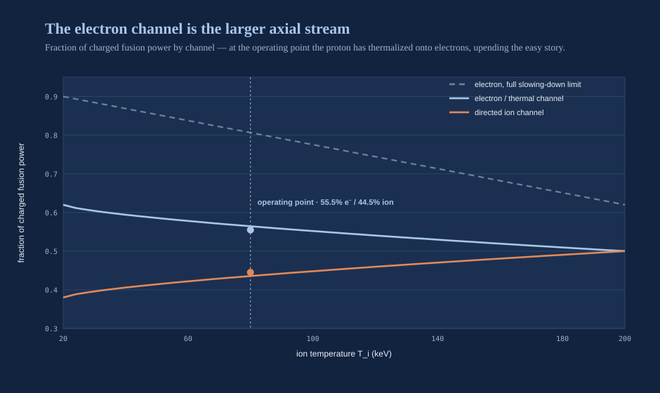
That inverts the picture the entire converter train was built on. The ion converters — venetian-blind, travelling-wave, cusp — are superb at what they do, but what they do is recover ions, and the ions are now the smaller channel. The single confinement ratio that sets the split — the axial escape time over the slowing-down time — sits around one-half for a sensible mirror, a physically ordinary regime, which is part of why the inversion is robust rather than a knife-edge coincidence.
The dominant stream leaving the machine is therefore a directed flood of hot electrons, and for a directed electron stream there is no established converter at all. The obvious candidate, a hot electron collector, defeats itself. Any surface hot enough to sit in that stream emits its own electrons back out — thermionic back-emission, governed by a law worth boxing because it is the whole trap:
J_back = 120.17 · T² · exp(−φ ÷ kT)
The back-emission current density climbs with the square of the collector temperature and falls exponentially with the emitter's work function φ. Set that current against the signal current the collector is meant to gather — about 0.0125 amperes per square centimetre at the burner's operating point — and map the ratio over temperature and work function, and there is a wall: a contour where back-emission equals signal. Every real low-work-function emitter material you could use — the lanthanum and cerium hexaborides, with work functions around 2.4 to 2.7 electron-volts, running at 1,500 to 1,900 kelvin — sits ten to ten-thousand times inside the flooded region, where its own emission drowns the signal. The gap fills, the collection stalls, and the wall that a hot electron converter would need turns out not to exist. Relocating the energy onto the electrons relocated the hard problem onto a channel with no known device to catch it.
For fifty years the field optimised a converter for the ion beam. The ion beam is the smaller half. Naming that inversion is worth more than another point of efficiency on the wrong channel.
The empty corner in ninety-eight papers
Before proposing a new device it is worth proving one is actually missing, because the fastest way to embarrass yourself in this field is to reinvent something that already exists under another name. We ran a citation-grounded sweep of ninety-eight verified primary works across the four subfields that touch this problem — ion direct converters, thermionic and low-work-function emitters, advanced-fuel spectra and thermalization, and adiabatic direct-conversion theory — and two negatives survived it, and between them they define the contribution of this chapter.
The first: no published direct-conversion accounting propagates the thermalized axial split rather than the birth spectrum. The advanced-fuel reactor-physics literature knows perfectly well that the fast ions dump their energy on the electrons — it books that in the volumetric power balance — but it stops at the volume and never carries the consequence out to an axial converter split. The correction in this chapter is not new physics; it is old physics followed one step further than anyone bothered to.
The second: no converter recovers a directed electron stream. Sort the ninety-eight papers onto a simple grid — recovers-ions versus recovers-directed-electrons, birth-spectrum versus thermalized-split — and every cluster lands in the same three corners. The ion converters recover ions. The thermionic community's wall is unsolved for a directed stream. The ambipolar magnetic nozzle, which can handle a quasineutral two-species flow, is run forward for thrust in every device that uses it. The fourth corner — a directed-electron converter built on the thermalized split — is empty. That empty corner is exactly where the next section sits.
The quasineutral expander
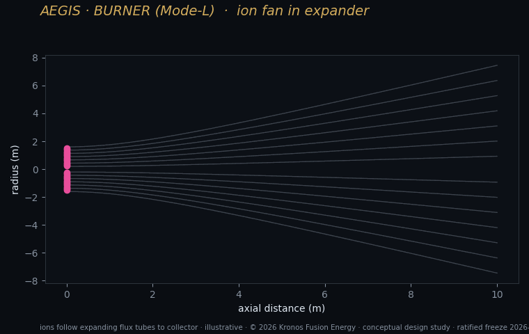
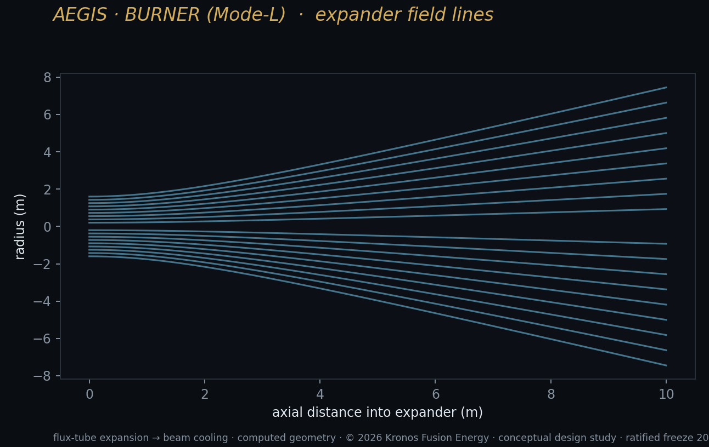
The way out came from turning an existing machine backward. The physics we needed already exists and is well tested — it is simply run the wrong way for our purpose in every device that uses it.
Consider a plasma thruster with a magnetic nozzle. In a thruster, a plasma expands down a diverging magnetic field, and as it expands the electrons' thermal energy is converted, through an ambipolar electric potential, into directed kinetic energy of the ions — that directed exhaust is the thrust. Quasineutrality holds throughout: electrons and ions move together, so no runaway space charge builds up. The thruster runs this conversion forward, spending electron heat to make directed ion motion. Our proposal is to run the very same physics in reverse, as an energy-recovery stage. Let the burner's electron-dominated exhaust expand down a diverging field, and the same ambipolar potential that a thruster uses to accelerate ions now stands as a hill the electrons must climb — and a biased collector at the exit harvests the directed energy of both species as they arrive. Because the flow stays quasineutral, electrons and ions expand together and the space-charge wall that killed the hot collector never forms. We call it a quasineutral two-species expander, and it is the one genuinely new device in the whole exhaust train.
The physics that makes it work is the adiabatic invariant — the same conserved quantity that makes a magnetic mirror reflect:
µ = (perpendicular energy) ÷ B ≈ constant
As the field weakens by an expansion ratio — call it the ratio of the field at the throat to the field at the exit — holding µ constant forces a particle's perpendicular energy down, and that energy reappears as parallel, forward-directed motion. It is the mirror run in reverse: where the throat turns particles around by driving perpendicular energy up, the expander straightens them out by draining it back down. Quasineutrality then sets up an ambipolar barrier whose height follows a clean relation:
eΔφ ≈ T_e · ln(R_exp)
In plain words: the electric barrier the expanding electrons must climb (on the left, an energy) grows with the electron temperature times the natural logarithm of the expansion ratio. Expand harder, and the barrier rises — but only logarithmically, so you reach steeply diminishing returns. One fully worked embodiment makes it concrete. Take an expansion ratio of twenty — a field falling from 5 tesla at the throat to a quarter-tesla at the exit — with 80-keV electrons at the throat. The relation gives an ambipolar barrier of about 240 keV, and that barrier is what the arriving electrons pay their energy into. In the ideal, perfectly adiabatic limit the expander recovers about thirty-nine percent of the electron channel; after the two real-world losses that we refuse to hide — the electrons partly slipping their field lines downstream, and the plasma not detaching cleanly from the nozzle — the realistic recovery is about twenty-eight percent. Across expansion ratios from two to sixty the realistic recoverable fraction runs from roughly sixteen to seventy percent. Every ingredient of this device — adiabatic conversion, the ambipolar nozzle, quasineutral two-species flow — is individually established in the literature; what has never been done is to assemble them in reverse, for recovery instead of thrust. That is the contribution, and it is the piece we carry openly as open-risk.
Because that recoverable fraction is the one genuinely uncertain number in the whole chapter, we do the honest thing and specify the experiment that closes it before building it, with the pass/fail thresholds fixed in advance. The elegance is that the mechanism is governed by dimensionless ratios — the barrier-to-temperature ratio, which must track the logarithm of the expansion; the electron's orbit size relative to the device; and the mean free path relative to the device — so a small bench plasma at a few tens of electron-volts, matched to the reactor in those dimensionless numbers, measures the same recovered fraction as a reactor at 80 kilo-electron-volts would. The pre-registered thresholds are concrete: the ambipolar barrier must follow the logarithm of the expansion ratio to within twenty percent, and the recovered fraction must land within or above the model band with quasineutrality preserved and no space-charge stall. A result on either side is a result — confirm the band and the expander graduates from theory to measurement; fall below it and we have bounded a fifty-year-old open problem rather than left it open. That is what carrying a number as open-risk should mean: not a hope, but a falsifiable claim with the test already written down.
The ledger, and the relation that closes it
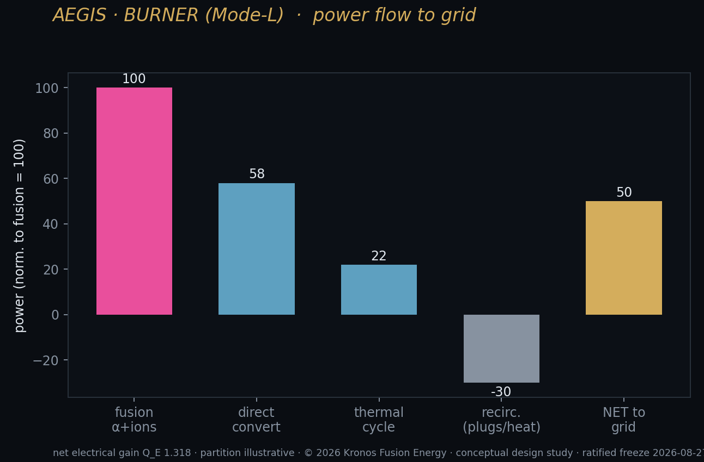
Now put real efficiencies on every stage, because a converter train is only as honest as the numbers it books, and the temptation to quote the aspirational seventy-to-eighty-percent figures the field has assumed for decades is exactly the temptation we resist. The ledger the burner actually runs on is sober and basis-tagged:
| Stage | Channel | Efficiency | Basis |
|---|---|---|---|
| Ion direct converter | ion | 0.48 | measured single-stage value |
| Electron → thermal bottoming | electron | 0.45 | sourced from turbine practice |
| Electron → quasineutral expander | electron | 0.283 | derived, open-risk |
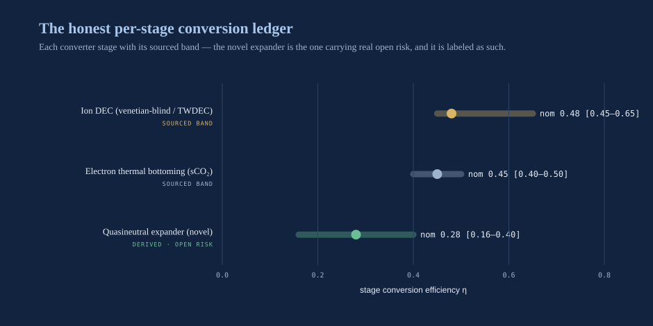
The ion converter is booked at 0.48 — the best real single-stage ion tube ever demonstrated, deliberately below the two-stage optimum that brochures quote. The electron channel has two rows, and they are not competitors to be compared, because 0.283 is smaller than 0.45 and it would be a blunder to read that as "the expander loses to the bottoming cycle." They are a cascade. The expander skims first, recovering the directed portion of the electron stream at a high collector efficiency of about 0.85; whatever the expander does not capture then falls through to a thermal bottoming cycle that recovers it at 0.45, Carnot-bound like any heat engine. The effective efficiency of the whole electron channel is therefore the sum of the two stages working in series:
**η_e^eff = f_rec · η_col + (1 − f_rec) · η_th**
In words: the effective electron-channel efficiency equals the fraction the expander recovers (f_rec) times the collector efficiency it recovers it at (η_col ≈ 0.85), plus the fraction the expander misses (1 − f_rec) times the thermal-bottoming efficiency it falls through to (η_th ≈ 0.45). Put the numbers in — an expander recovering 0.283 of the channel — and the relation gives:
**η_e^eff = 0.283 × 0.85 + 0.717 × 0.45 = 0.563**
The electron channel, in other words, is recovered at about 0.56 with the expander in place, against 0.45 for thermal bottoming alone. Applied to the burner's canonical axial split, the expander lifts the axial electric recovery from about 717 megawatts-electric to about 815 — a gain of roughly thirteen percent, some 97 megawatts of electricity clawed back from a channel that, without the expander, has no dedicated converter at all.

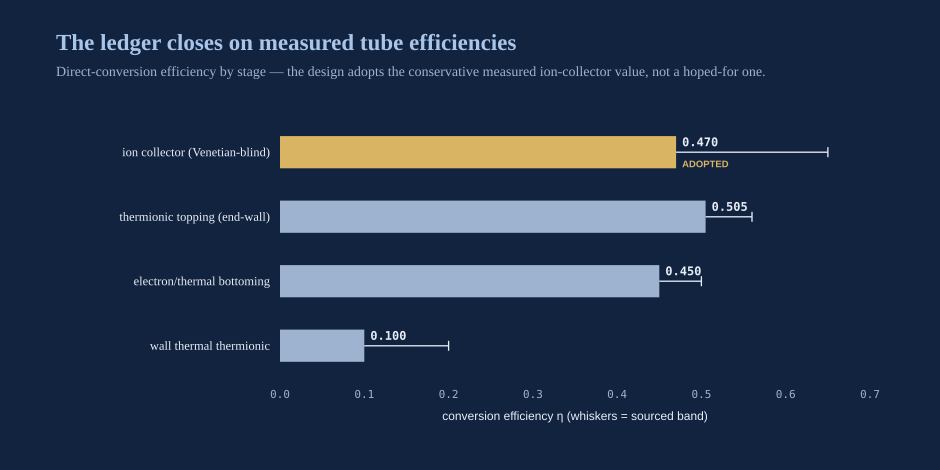
What is open, named as such
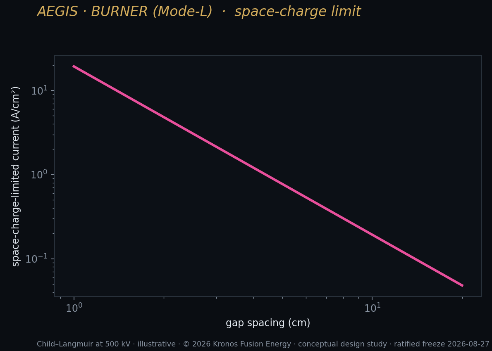
A converter train is only as trustworthy as its list of things-not-yet-known, so here is ours, carried openly rather than absorbed into a headline. There are four open items, and their weights differ.
The first, and the only one that touches the novel device, is the expander's recoverable fraction. It rests on two loss mechanisms borrowed from the propulsion literature — the electrons partly slipping their field lines as the field weakens downstream, and the plasma not detaching cleanly from the diverging nozzle — neither of which has been measured for an energy-recovery expander, only for a thruster. That is why we band it from an ideal thirty-nine percent down to a realistic twenty-eight, and why the pre-registered bench experiment exists. The second: the signal current we set the back-emission wall against is a modelled operating point rather than a measured collector value — but the wall's verdict is robust to it, because the real emitter materials flood by ten to ten-thousand times, and no plausible signal current climbs out of that hole. The third: the exact spectral shape of the three-body helium-3-on-helium-3 continuum is modelled statistically; the conclusion that two lines beat a continuum survives any reasonable shape, but the precise ratio is soft. The fourth: the high end of the ion-converter efficiency band traces to a report often available only in abstract, so we book the measured single-stage 0.48 and leave the optimistic two-stage figure out of the balance entirely.
Notice what is not on that list: the correction itself. That the electron channel is the larger axial stream is not open-risk — it follows from textbook slowing-down physics and holds across every confinement regime. The correction is settled; only the device that answers it is still being proven.
A bounded upside, honestly labelled
I want to close this chapter the way the underlying design study closes: by refusing to oversell the very thing it is proud of. The expander adds about 97 megawatts on the electron channel, and thirteen percent on axial recovery is a real number. But it moves the plant's overall engineering gain only marginally, because the burner's net output is throttled not by the converters but by the recirculating power the machine spends holding its plasma at the end plugs. Direct conversion of the electron channel is a genuine upside — a lever to push efficiency higher — but it is a bounded upside, and it is not what the burner's power balance rests on. What the closure rests on is the plug, and that gate belongs to another chapter. I state this deliberately, against the temptation to present the expander as the difference between a machine that barely breaks even and one that generates freely. It is not that difference. Its value is subtler and, I think, more durable: it recovers the dominant axial channel through a route with no known wall, and a pre-registered experiment on it will close a fifty-year-old open problem in advanced-fuel energy conversion whichever way the result lands.
That, in the end, is why direct energy conversion is the burner's economic secret and not merely a clever bolt-on. The Carnot tax is the largest single cost in every conventional power plant, and DEC is how the burner declines to pay most of it — but only because the fuel comes out charged, which is only true because the fuel is low-neutron D–³He, which is the whole reason the machine has the shape and the fuel it does. The forty-dollar electron is a directly converted electron. Skip the boiler and you skip the tax; skip the tax and the price of firm, clean, around-the-clock power finally falls to where the second of this book's three forties says it can go. Humanity has spent three centuries learning to boil water more cleverly. Here, at last, is a way to make electricity without the fire and the kettle at all — a power plant that skips the oldest step in the whole enterprise. The physics of that shortcut is public, the efficiencies are measured or honestly banded, and the one novel device in the train is named as open-risk rather than assumed. The lightning is real. Catching it, directly, is the point.
This chapter's forty. $40 a megawatt-hour — reachable because direct conversion catches, as electricity, the charged energy a steam plant throws away as heat.